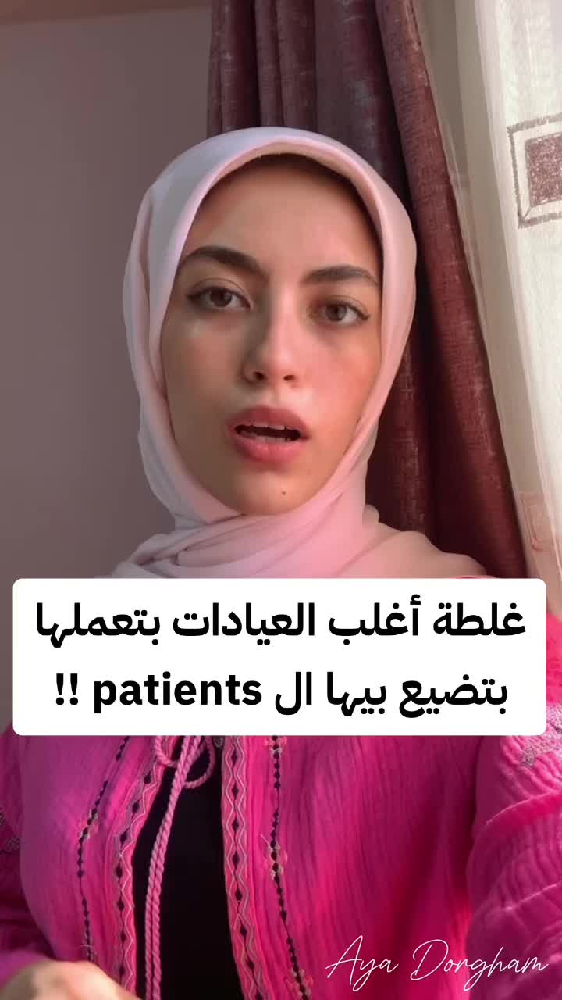

التسويق الطبي لا ينجح إلا إذا قاده من يفهم لغة الطب وعقلية المريض.
كطبيبة ممارسة وميديا باير متخصصة في الإعلانات الممولة (Meta, TikTok)، أساعد المراكز والعيادات التخصصية في مصر والخليج على جذب الحالات الجادة وسد الفجوة بين الإعلان والحجوزات المؤكدة.
د. آية درغام
هل واجهت هذه المشاكل مع شركات التسويق؟
تسويق الخدمات الطبية يحتاج ثقة وأمانة علمية، ولهذا تفشل الحلول التسويقية العامة.
«إعلانات شغالة ومفيش حجوزات فعلية»
تصلك عشرات الرسائل تسأل "بكام الكشف؟" ثم يختفي المريض تماماً. السبب: استهداف عشوائي لصائدي الأسعار بدلاً من استهداف المرضى المهتمين بالقيمة الطبية.
«المسوق لا يفهم الفرق بين الإجراءات الطبية»
وكالات عامة تخلط بين زراعة الأسنان والتركيبات، أو تكتب وعوداً وهمية تخالف معايير وزارة الصحة والنقابة وتهدد سمعة المركز الطبي.
«تسريب المرضى عند مرحلة الاستقبال (Reception)»
مهما كان الإعلان ناجحاً، إن لم يكن فريق الاستقبال مدرباً على التعامل مع مخاوف المريض والرد الفوري، فإن 80% من الميزانية تضيع هباءً.
أركان نمو المراكز والعيادات الطبية
خطة شاملة تغطي رحلة المريض بالكامل من لحظة رؤية الإعلان وحتى دخوله غرفة الكشف.
1. الميديا بايينج الطبي الموجه
إدارة الحملات الممولة على Meta (Facebook & Instagram) و TikTok و Snapchat بدقة متناهية وبناء جمهور مخصص لكل إجراء.
- ✓ استهداف جغرافي دقيق للمرضى في نطاق العيادة (مصر والخليج)
- ✓ استهداف شرائح قادرة على تكاليف العمليات والإجراءات الكبرى
- ✓ اختبار مستمر للرسائل الإعلانية وخفض تكلفة الحجز (CAC)
2. المحتوى الطبي والفيديو (Doctor Branding)
توجيه الطبيب لصناعة فيديوهات تثقيفية تبني الثقة وتهيئ المريض نفسياً دون مبالغة تجارية مبتذلة.
- ✓ سيناريوهات فيديو تجيب عن أسئلة ومخاوف المرضى الشائعة
- ✓ إبراز خبرات وشهادات الطبيب والتقنيات الحديثة المستخدمة بأمانة
- ✓ نصوص تلتزم بالقوانين وأخلاقيات المهنة الطبية
3. تدريب الاستقبال وإغلاق الحجوزات
تحويل المحادثات والاستفسارات إلى مواعيد مؤكدة على جدول العيادة، وتقليل نسبة الغياب (No-Show Rate).
- ✓ إعداد ردود نموذجية وسريعة على الواتساب والمكالمات
- ✓ نظام تأكيد المواعيد والتذكير المسبق لضمان الحضور
- ✓ تتبع أداء فريق الاستقبال وربط الإعلانات بالحضور الفعلي
4. هندسة عروض الحالات الكبرى
تصميم حملات خاصة للإجراءات الطبية والجراحية ذات القيمة العالية لجعل العيادة الوجهة الأولى للحالات الدقيقة.
- ✓ حملات زراعة الأسنان، تقويم الأسنان، والتركيبات المتكاملة
- ✓ حملات جراحات العيون (الليزك والمياه البيضاء) وجراحات المفاصل
- ✓ توضيح خيارات التقسيط وخطط العلاج بطريقة مشجعة
5. لوحة قياس الأرقام والـ ROAS
شفافية كاملة وتقارير دورية تظهر أين صُرف كل قرش وما العائد المالي الفعلي الذي تحقق للعيادة.
- ✓ تتبع تكلفة المريض المحجوز (Cost per Booking)
- ✓ تقارير أسبوعية وشهرية توضح تفاصيل الحملات ونقاط التحسين
- ✓ حساب القيمة الدائمة للمريض (Patient Lifetime Value)
6. المنظور الإكلينيكي المباشر
امتلاك د. آية لخبرة ممارسة طب وجراحة الأسنان يمنح كل حملة عمقاً علمياً وفهماً حقيقياً لألم المريض وتوقعاته.
- ✓ فهم بروتوكولات التعقيم والمعدات ونوعية المواد الطبية
- ✓ التحدث بنفس لغة الأطباء والتفاهم السريع مع مدراء المراكز
- ✓ الثقة الكاملة في مراجعة أي مادة علمية قبل نشرها
فيديوهات واستراتيجيات عملية للعيادات
دروس وتحليلات حقيقية من حسابات د. آية درغام تشرح أسرار نمو العيادات ومسار تدفق المرضى (Clinic Flow).

الأكثر مشاهدة (14.6K) حلول عملية
حلول عملية
 عقلية المريض
عقلية المريض
 دراسة حالة
دراسة حالة
 صوت الطبيب
صوت الطبيب
 قمع العيادات
قمع العيادات
نخدم فروع المنظومة الطبية التخصصية
خبرة التسويق الطبي تتسع لتشمل جميع أنواع المراكز والعيادات التخصصية الكبرى في مصر والخليج.
مراكز الأسنان
زراعة، تقويم، وتركيباتطب وجراحة العيون
ليزك، مياه بيضاء، وفحوصاتالعظام والمفاصل
مفاصل، عمود فقري، وإصاباتالعلاج الطبيعي
تأهيل حركي وعلاج فيزيائيالباطنة والقلب
قسطرة، ضغط، وفحوصات دوريةالمجمعات ومراكز الأشعة
تشخيص، تحاليل، وفحوصات شاملةباقات النمو المصممة لواقع العيادات الطبية
اختر خطة العمل المناسبة لمرحلة عيادتك الحالية، سواء كنت تبدأ أو تتوسع في السوق.
باقة التدقيق والاستشارة الفردية
- ✓ مراجعة شاملة لحسابات العيادة وحملاتها السابقة
- ✓ تشخيص مواطن تسريب المرضى في مرحلة الاستقبال والواتساب
- ✓ إعداد تقرير مكتوب بخطة العمل التسويقية للـ 90 يوماً القادمة
- ✓ جلسة زووم للإجابة عن جميع استفسارات الطبيب وإدارته
باقة إدارة النمو والميديا بايينج الكاملة
- ✓ إدارة الحملات الممولة على Meta (FB & IG) و TikTok
- ✓ صياغة وتوجيه تصوير الفيديوهات الطبية الإعلانية أسبوعياً
- ✓ استهداف خاص لحالات الزراعة والتقويم والجراحات الكبرى
- ✓ تدريب عملي لفريق الاستقبال (Reception) وسكريبتات رد سريعة
- ✓ تقارير أسبوعية تفصيلية ومتابعة مستمرة لتقليل تكلفة الحجز
باقة إطلاق وتوسّع المراكز الطبية
- ✓ بناء المنظومة التسويقية الكاملة وتدريب الفريق الداخلي
- ✓ حملات متزامنة لعدة تخصصات طبية في وقت واحد
- ✓ بناء الحضور الرقمي (Doctor Branding) لكبار أطباء المركز
- ✓ إشراف مباشر واستشارات دورية لتطوير التوسع الإقليمي
اطلب تدقيقاً تسويقياً مجانياً لعيادتك (Clinic Audit)
شاركنا تفاصيل عيادتك الحالية والتحدي الذي تواجهه، وسنتواصل معك لتحليل الوضع وتقديم خطة نمو واضحة.